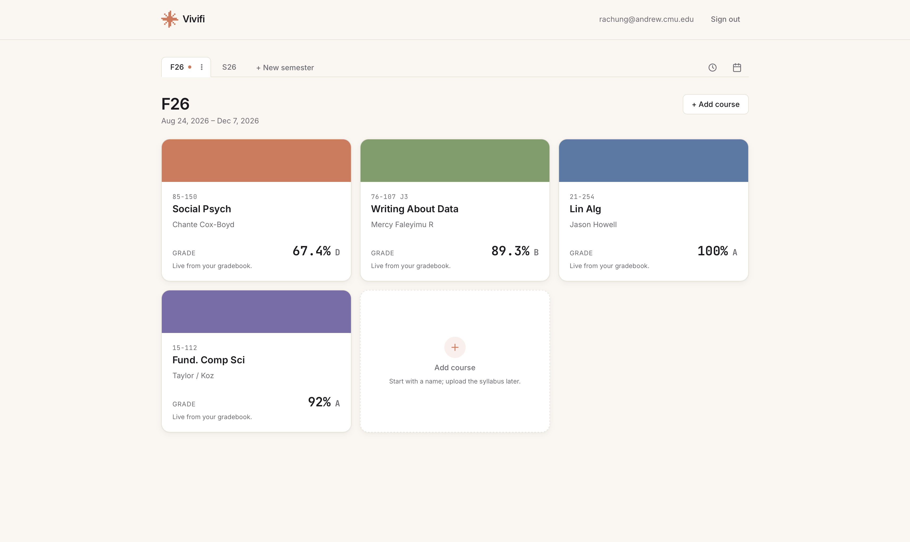
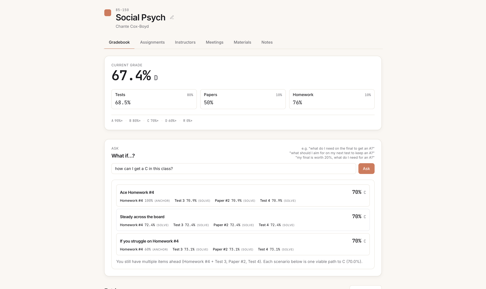

why I built it
Everything you need to pass your class lives in a static document you read once.
In a system built around grades and GPA, it's surprisingly hard to know where you stand in a class at any moment. It depends on how each professor or TA uses Canvas or Gradescope, and on announcements like unrecorded curves. Diligent students spend hours building their own spreadsheets across courses, platforms, and grading scales.
The cost of not knowing is real. I've had friends in tears over too many question marks in their gradebook near the end of the semester, friends end up on probation unexpectedly, and friends who had to make a gradebook for their entire class by themself.
Vivifi started from that gap. It turns a 10-page contract into something you can interact with all semester, so students know when they need help and where to get it.
see it in action


see the gradebook predictor
A big componenet of creating this project was around the gradebook predictor. I wanted to use AI so it could handle those anxiety-ridden panicked questions without touching your numbers. The predictor thus only sends the overview and question to AI and AI sends back to the codebase what to actually calculate, so that AI never actually touches your numbers.
how it works
Vivifi has one simple flow to get you live in under 3 minutes.
Every value keeps a record of whether it came from the syllabus or from you, so there's never a question about where a number came from. From there you get a semester hub: a live gradebook, an assignment and exam tracker (calendar, week, or list), and a directory of instructors and office hours.
Claude API is called to parse data, and the pdfplumber library is used to extract text from PDFs. No info other than the info you confirm afterwards it stored on the database.
my ai philosophy
A question I wanted to approach was the role AI can and should play in higher education. It was important to me that Vivifi was intentionally not a chatbot. There's nothing to talk back and forth with. AI appears in exactly the places it's needed, does one narrow job, and gets out of the way. Language models are good at reading messy PDFs and understanding how someone phrases a question. They aren't a substitute for verifiable arithmetic, or for a student's own judgment about their own coursework.
ai reads
- turns a messy syllabus PDF into structured fields
- turns "can I still get an A?" into a formal query
code calculates
- every weighted grade
- every what-do-I-need scenario
- the same answer every time, so no hallucinated math
you decide
- review and edit every extracted field before it's saved
- see whether each value came from the syllabus or from you
Additionally, the app was built using AI (as per competition guidelines). My approach and process was largely shaped by what I was taught in my coursework (15-113, Effective Coding with AI) including starting with a detailed SPEC, building in sections, and understanding all my code before committing anything.
designing + building (+ presenting!)
things working and breaking
It took a lot of "prompt engineering" as well as going through multiple kinds of syllabus to understand the nuances of what each student might be looking for. The decision to use pdfplumber was because pdfplumber also handles spacial componenets to pdfs, making those couple of pdfs that just have a table of assignments and dates much easier to parse.
the pathfinders challenge
Vivifi was built for Stellic's Pathfinders Challenge 2026 and named among the top 3 finalists out of nearly 200 submissions nationwide. This project was build with the prompt to create an app that overcomes obstacles in higher education. The challenge gave us Claude API credits and encouraged us to build with AI. This project was completed in 3 weeks.
As a finalist, I was flown out to present a live demo in Philadelphia at Stellics Partners Summit in front of ~250 higher education professionals, and then table for the rest of the day. It was an amazing experience to meet and learn from so many people, including my two other finalists for the day.
continuous improvement
At the end of the day, this project was a functional proof-of-concept and prototype. If I kept building it, I'd would begin API integration (data from Canvas, Gradescope, etc.) and also keep iterating on the grade predictor. I also got feedback from the conference that it could also be helpful to students as a planner assistant, helping students understand how long to spend on assignments and studying.
- tools
- Cursor (Opus 5, Auto: other models), hosted on Render, Neon Postgres, and GitHub pages
- timeline
- summer 2026, over 3 weeks
- role
- solo, design + development
- event
- stellic pathfinders challenge 2026
- status
- top 3 finalists · live app offline